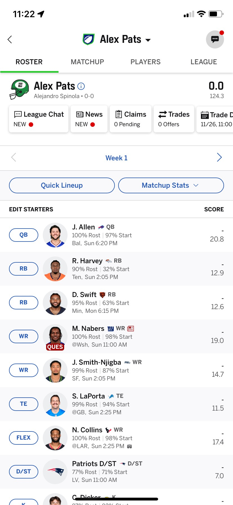
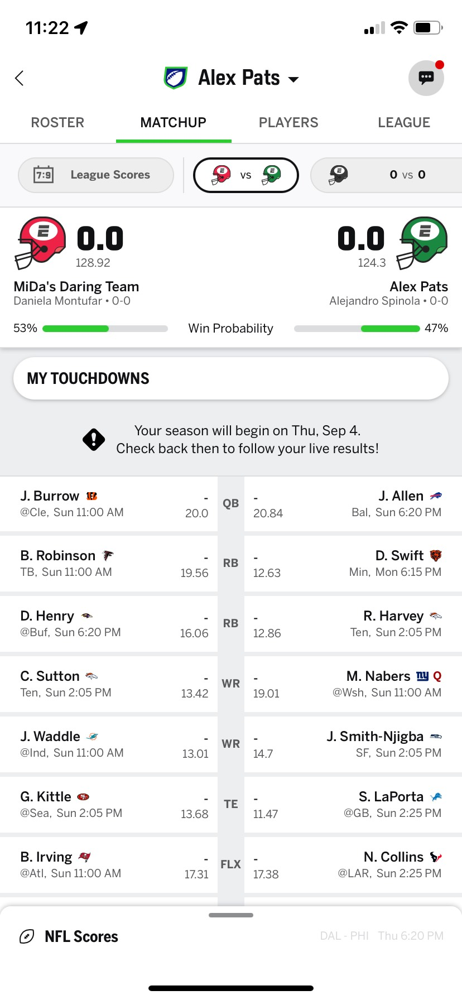
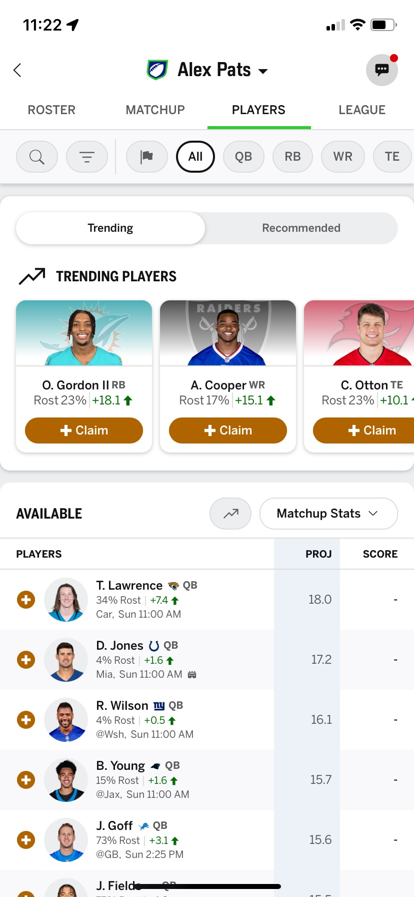
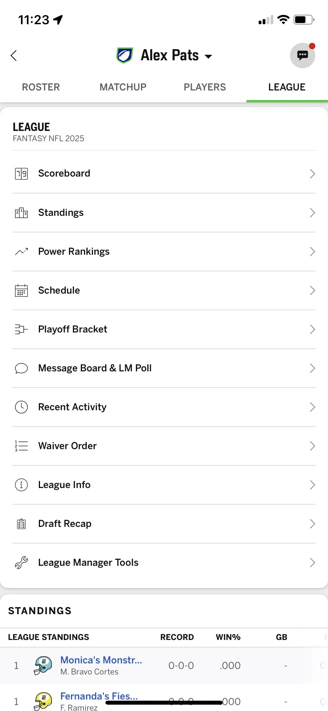

Welcome to the 2025 Perfect Package Fantasy Football league!
Build your team with real NFL players and score points based on their performance. Each week you face another team. Whoever scores more points wins!
1) League rules
- Teams: 12
- Draft: Automatic (this year)
- Roster: 16 players / 9 starters
- Format: Head-to-head, points-based
- Scoring: passing, receptions, rushing, kicking, defense, and special teams plays.
New to Fantasy? The app suggests starters and flags injuries and bye weeks.
2) Key dates
- 📅 Automatic draft: August 28
- 🏈 Season kickoff: September 4, 2025
- 🏆 Fantasy Playoffs: NFL Weeks 14–17
Weekly format
- Your team faces another team each week.
- Only starters score.
- The bench holds backups or speculative picks.
3) How to play each week
A) Set your lineup
- Choose starters and bench before games start.
- The app flags injuries and bye weeks.
- If unsure, check the projections.
B) Win your matchup
- Whoever scores more points that week wins.
- Tiebreaker for regular season: Total touchdowns scored.
C) Manage your team
- Waivers / Free agents: add unclaimed players.
- Trades: negotiate with other teams.
- News: watch injuries, hot streaks and lineup changes.
4) Deadlines
Golden rule: A player is locked on your lineup when their team's real game starts. From that minute you cannot move them.
- Thursday night: first game of the week — set your starters before this.
- Sunday (early & late): players lock for those windows.
- Monday night: last game — last chance to move players who haven't played yet.
Tip: if possible, keep Monday players in FLEX to preserve more replacement options.
5) Projections
ESPN shows an expected points number for each player each week. It's a guide, not a guarantee.
- Use projections to choose between similar players.
- A projection of “0” may indicate injury or BYE.
6) Bye Weeks
Watch out! If a player is on BYE they score 0 points. Don't start them.
- The app marks BYE weeks.
- Plan at least one week ahead to cover gaps.
7) Waivers & Free agents
- After games, many players go through waivers (claim order).
- Submit a claim; if you have priority you'll get the player when waivers process.
- If no one claims them, they become a free agent and can be added immediately.
8) Trades
- Propose a trade to another team (e.g., your RB for their WR).
- The other team accepts or rejects.
- There may be a review/veto period depending on league settings.
Best trades help both teams: you cover a need and the other team does too.
9) Scoring by position
| Event | QB | RB/WR/TE | K | D/ST |
|---|---|---|---|---|
| Passing yards | 1 point per 25 yds | — | — | — |
| Passing TD | +4 | — | — | — |
| Interception thrown | -2 | — | — | — |
| Rushing yards | 1 point per 10 yds | 1 point per 10 yds | — | — |
| Receiving yards | — | 1 point per 10 yds | — | — |
| Reception (PPR) | — | +1 per catch | — | — |
| Rushing/receiving TD | +6 | +6 | — | — |
| Extra point (PAT) | — | — | +1 | — |
| FG 0–39 yds | — | — | +3 | — |
| FG 40–49 yds | — | — | +4 | — |
| FG 50+ yds | — | — | +5 | — |
| Sack | — | — | — | +1 |
| Interception / Fumble recovery | — | — | — | +2 |
| Defensive or return TD | — | — | — | +6 |
| Points allowed (D/ST) | — | — | — | See breakdown below |
D/ST: Points Allowed Breakdown
| Points Allowed | D/ST Fantasy Points |
|---|---|
| 0 (Shutout) | +10 |
| 1–6 | +7 |
| 7–13 | +4 |
| 14–20 | +1 |
| 21–27 | 0 |
| 28–34 | -1 |
| 35+ | -4 |
Starter positions
- QB: Quarterback.
- RB: Running back.
- WR: Wide receiver.
- TE: Tight end.
- FLEX: Start a RB, WR or TE.
- K: Kicker.
- D/ST: Defense & special teams.
10) Quick tips
- Check your team before Thursday.
- Avoid starters on BYE or injured.
- Use projections and news, but trust your judgment.
- Propose trades if you lack depth at a position.
- Use FLEX for the safest or highest-ceiling player.
11) Weekly checklist
- 🔔 Are all your starters healthy and not on BYE?
- 📊 Did you check projections and matchups?
- 🧠 Do you have a backup plan if someone is questionable?
- 🛒 Did you submit waivers if you need replacements?
12) Quick glossary
- BYE: team rest week (0 points).
- PPR: points per reception (+1 per catch).
- Waivers: priority system to claim players.
- FLEX: roster slot for RB/WR/TE.
- Ceiling/Floor: expected high/low scoring range.
13) ESPN Fantasy App Guide
The ESPN app has several main tabs. Here’s a quick guide to help you know where to find everything.
🏠 My Team (Roster)
- The "Quick Lineup" option will set starters based on the app's suggestions.
- You can navigate between weeks using the arrows (⬅ ➡) to identify BYEs.
- Allows changing starters and bench before each game starts.
- Tapping a player shows more details about their stats and latest news.
- Note: Injury statuses update from Wednesday to Friday and 90 minutes before kickoff.

📊 Matchup
- Compare your team in real-time against your opponent.
- Includes projections and live performance.
- You can navigate other matchups by swiping left or right at the helmet section.

🔄 Waivers / Players
- Search for free agents available in the league.
- Submit waiver requests: processed overnight.
- If a player becomes free later, you can add them directly.

🤝 League
- Check the league settings.
- Shows the overall standings by wins.
